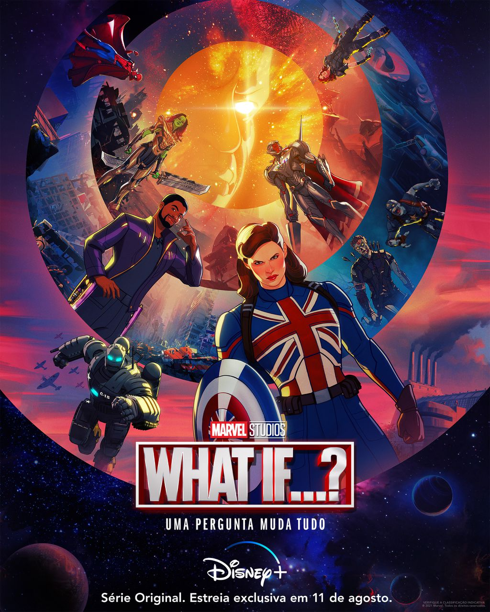

The Handmaid's Tale (O Conto da Aia)
Disponível em : Globoplay, no UOL Play e no Hulu.
4 temporadas.
Depois que um atentado terrorista tira a vida do presidente dos Estados Unidos e de grande parte dos outros políticos eleitos, uma facção católica toma o poder com o intuito de restaurar a paz.
Adaptação literária por Margaret Atwood.
Clique aqui para ver o trailer de "The Handmaid's Tale"!4 temporadas.
Depois que um atentado terrorista tira a vida do presidente dos Estados Unidos e de grande parte dos outros políticos eleitos, uma facção católica toma o poder com o intuito de restaurar a paz.
Adaptação literária por Margaret Atwood.
Locke & Key
 Disponível na Netflix.
Disponível na Netflix.
2 temporadas.
Quando o patriarca da família Locke é assassinado, Nina (Darby Stanchfield) e seus três filhos, Tyler (Connor Jessup), Kinsey (Emilia Jones) e Bode (Jackson Robert Scott), decidem recomeçar a vida em uma mansão na Nova Inglaterra.
Adaptação dos quadrinhos por Carlton Cuse, Meredith Averill e Aron Eli Coleite.
Clique aqui para ver o trailer de "Locke & Key"!
Disponível na Netflix.2 temporadas.
Quando o patriarca da família Locke é assassinado, Nina (Darby Stanchfield) e seus três filhos, Tyler (Connor Jessup), Kinsey (Emilia Jones) e Bode (Jackson Robert Scott), decidem recomeçar a vida em uma mansão na Nova Inglaterra.
Adaptação dos quadrinhos por Carlton Cuse, Meredith Averill e Aron Eli Coleite.
What if...?

Disponivel no Disney+
1 temporada
Série animada
Imagine o que teria acontecido aos super-heróis se a história fosse totalmente diferente e se passasse em outra realidade!
Clique aqui para ver o trailer de "What if...?"!1 temporada
Série animada
Imagine o que teria acontecido aos super-heróis se a história fosse totalmente diferente e se passasse em outra realidade!
Steven Universe
 Disponivel no HBO Max
Disponivel no HBO Max
5 temporadas + Filme + Steven Universe Future
Série animada
É a história de amadurecimento de um menino (e suas descobertas sobre sua mãe), Steven Universe, que mora com as Crystal Gems - seres intergalácticos mágicos.
Clique aqui para ler um pouco sobre "Steven Universe"!
Disponivel no HBO Max5 temporadas + Filme + Steven Universe Future
Série animada
É a história de amadurecimento de um menino (e suas descobertas sobre sua mãe), Steven Universe, que mora com as Crystal Gems - seres intergalácticos mágicos.